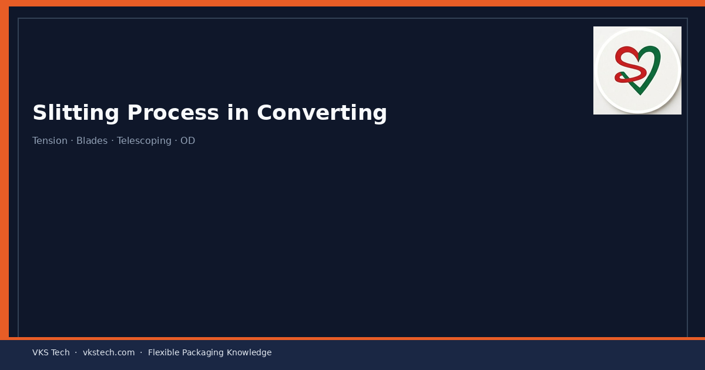
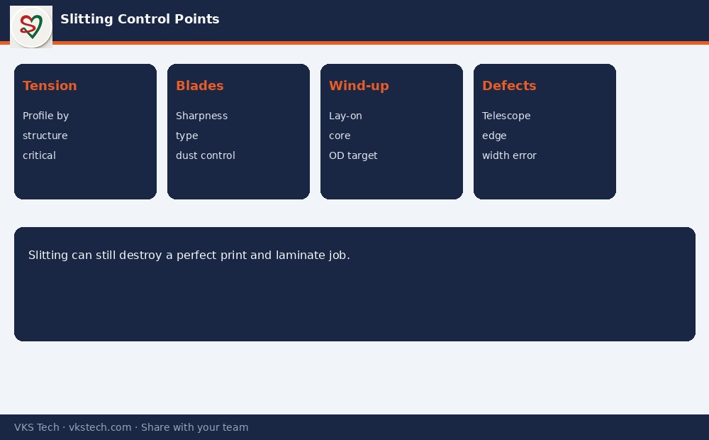

✂️ Slitting Looks Like “Just Cutting Width”. Most Customer Complaints About Telescoping, Edge Quality and Wrong OD Start Here.
📖 9-min read · Slitting · Production + PPC + Quality
After printing and lamination, wide rolls must become the exact widths the pouching line or customer needs. Slitting is fast — often 300–600 m/min — and that speed hides how sensitive tension, blade condition and wind-up settings are. This article focuses on what actually fails on the floor.
- Speed: often 300–600 m/min
- Main defects from poor slitting: telescoping, soft/hard edges, dust, width variation, wrong OD
- Key controls: tension profile, blade sharpness/type, lay-on pressure, core quality
1. What the Slitter Actually Does
Unwind the wide roll → control tension → cut with razor or shear knives into set widths → rewind each strip onto cores at controlled tension and taper. Every one of those steps can create a complaint that appears only at the customer or on the pouching machine.

2. Control Points PPC Should Track
- Correct width program vs order (wrong width is pure waste)
- Blade change discipline (dull blades create dust and poor edges)
- Tension recipe by structure (thin films need different settings than heavy laminates)
- Finished OD and meter length match to what pouching or customer expects
Next → Pouching Machines & Pouch Types
✂️ स्लिटिंग “सिर्फ चौड़ाई काटना” लगता है। टेलीस्कोपिंग, एज क्वालिटी और गलत OD की ज्यादातर शिकायतें यहीं से शुरू होती हैं।
📖 9-मिनट पढ़ें · स्लिटिंग · प्रोडक्शन + PPC + क्वालिटी
चौड़े रोल को सही चौड़ाई में काटना तेज काम है (अक्सर 300–600 m/min)। स्पीड छुपा देती है कि टेंशन, ब्लेड और वाइंड-अप कितने संवेदनशील हैं।
अगला → पाउचिंग मशीनें और प्रकार